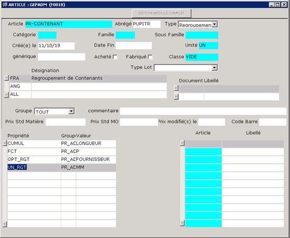
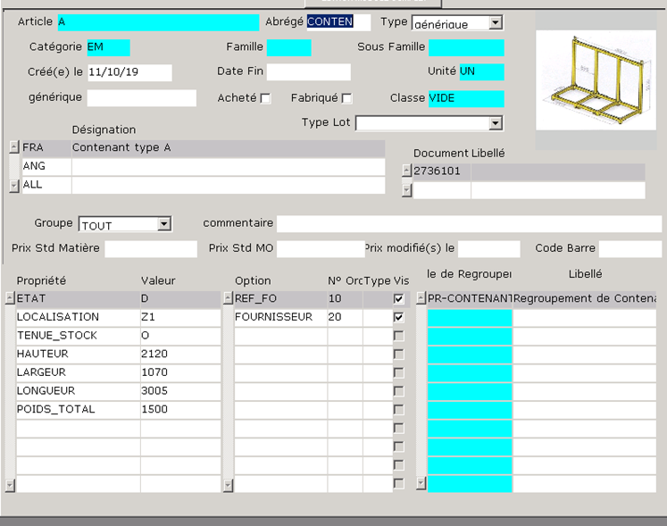
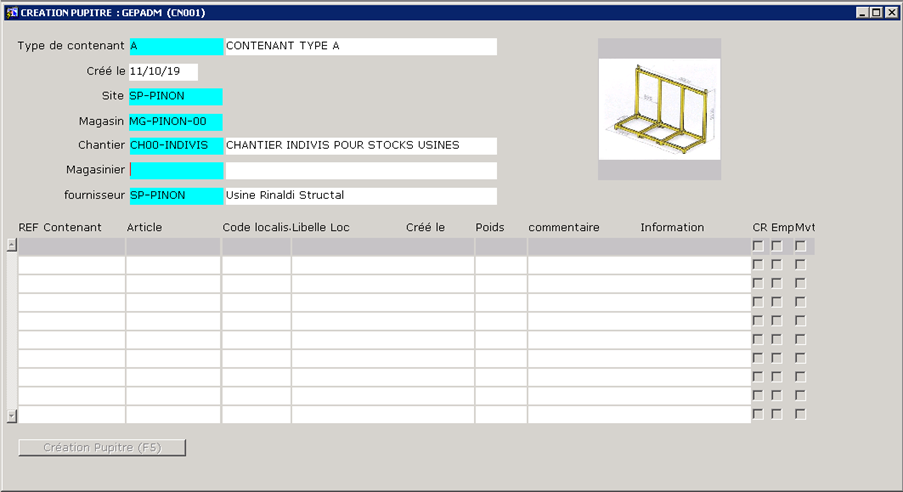
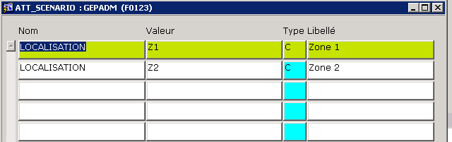
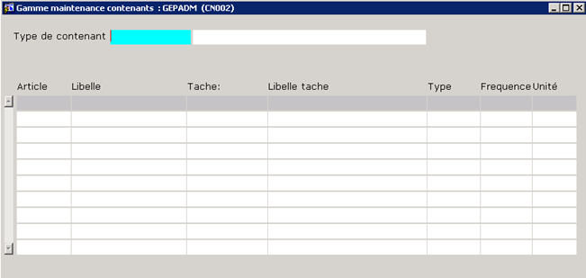
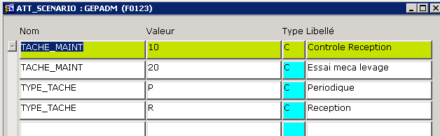

De : Alexis BENOIT  
Envoyé : vendredi 11 octobre 2019 10:01
À : KUNTZ Jean-Pierre <J.KUNTZ@rinaldi-structal.com>; BADACHE Habib <h.badache@rinaldi-structal.com>
Cc : Alain ZIPPERT <azi@gepix.fr>
Objet : Mise en production création contenants
Bonjour,
Les programmes de création de Contenant et de gamme de maintenance sont installés en production
L’article de regroupement ‘PR-CONTENANT’ a été créé
Ainsi que les contenants de type A et X
Le type A pourra servir de modèle afin de créer les types B, C, etc…
Rappel : Les génériques devront obligatoirement être rattachés à l’ADR : ‘PR-CONTENANT’    
Pour l’écran de création de contenant :
Pour figurer dans la liste F4 magasinier et fournisseur :
Le magasinier doit avoir une CT ‘CNT_MAT’ = ‘O’
Pour un type ‘X’, le fournisseur doit avoir une CT ‘CNT_FOUR’ = ‘O’
Cela permettra de limiter les liste F4 afin qu’elles soient plus lisibles et rapides
Les localisations rentrées devront exister dans la table att_scenario.
Il est néanmoins possible de laisser le champ à null.
Le poids doit obligatoirement être rempli et supérieur à 0
Des localisations ont été mise en place dans la table att_scenario
Les étiquettes pourront être éditées à la création des contenants, ou rééditées via la fiche article.
NB : Pour les contenants ( génériques appartenant à l’ADR ‘PR-CONTENANT’), c’est la référence fournisseur qui figure dans le code barre édité
Pour l’écran de création de la gamme de maintenance
Les taches et les types doivent exister dans att_scenario, j’en ai déjà créer quelques une qui pourront servir d’exemple
Je reste à disposition en cas de besoin
Cordialement,
----------------------------------------
BENOIT Alexis
Gepix